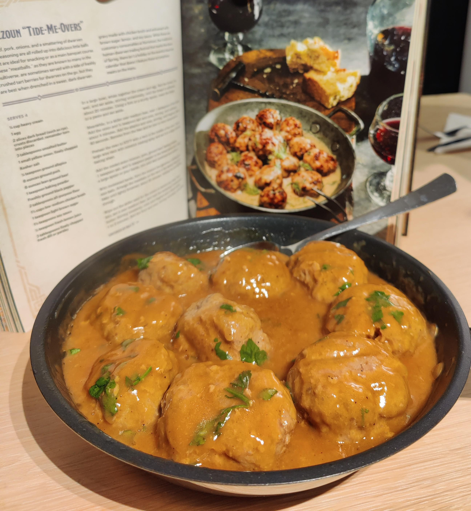

Tide Me Overs

Description
Delicious meatballs straight from the dwarven cuisine!
Ingredients
- 60ml of heavy cream (35%)
- 1 egg
- 2 slices of dark bread (preferably pitless)
- 3 tablespoons of unsalted butter
- a small union. finely chopped
- some salt
- 2g of allspice
- 500g of ground pork and beef
- pepper
- 2 tablespoons of all purpouse flour
- 350ml of chicken broth
- 1 tablespoon of brown suger
- 1 1/2 tablespoons of soy sauce
- 1/2 tablespoon of lemon juice
- 3 tablespoons of dill or parsley
Steps
- In a large bowl, wish the cream and egg together.
-
Remove the crust from the bread and tear it into small pieces, then add
into the bowl. Mix well and set aside stirring occasionally (about
20min).
-
Using a fork or spoon mash the bread into a paste, set aside again.
-
In a large pan, melt a bit of butter, then add the unions and salt.
stirring, until softened and then add the allspice until fragrant.
- Set aside and let them cool.
- Preheat the over to 245C.
-
Add the cooled unions, meat, salt and pepper to the bread mix and mix
them together with your hands or large spoons. (dont mix too long/well
or they will be thougher!)
- Moisten your hands and form the mixture into small sized balls.
-
Put them on a drip rack and put in the oven for 20 min, about halfway
through rotate the pan. (if you dont have a drip rack use some aluminum
foil for easy cleanup!)
-
Use the pan again to make the sauce. Melt the remaining butter and add
the flour until a smooth golden brown.
- Switch to a whisk and slowly add the broth into the pan
- Add the soy sauce, lemon juice and sugar into the sauce.
- Keep cooking and stirring until it thickens.
- Add the meatballs to the sauce, simmer until heated through.
home